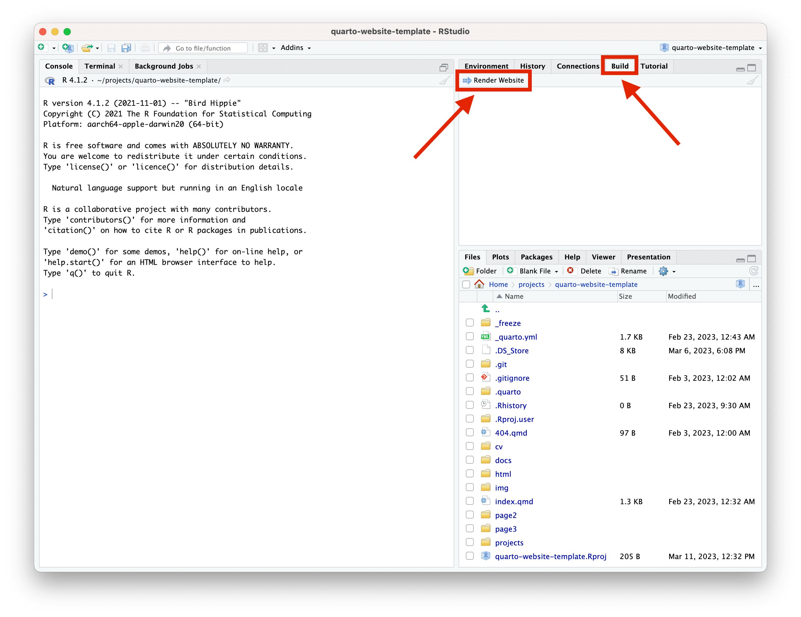
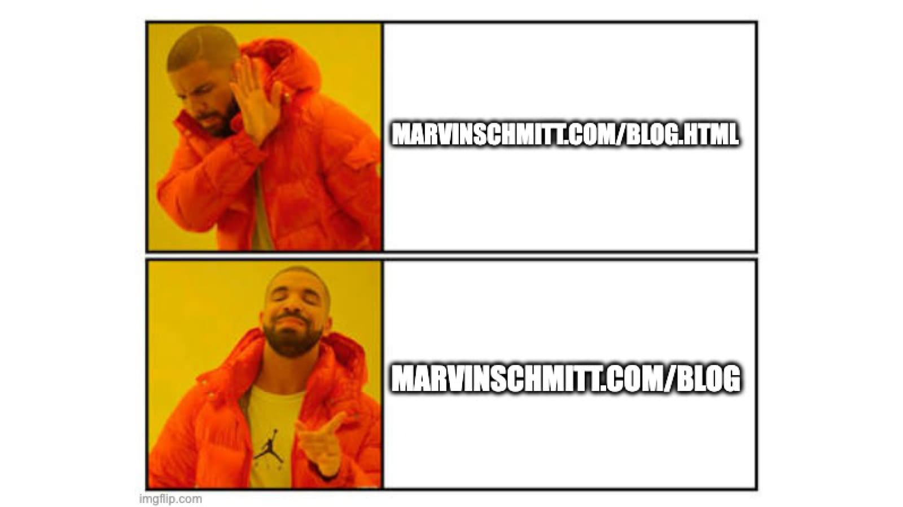
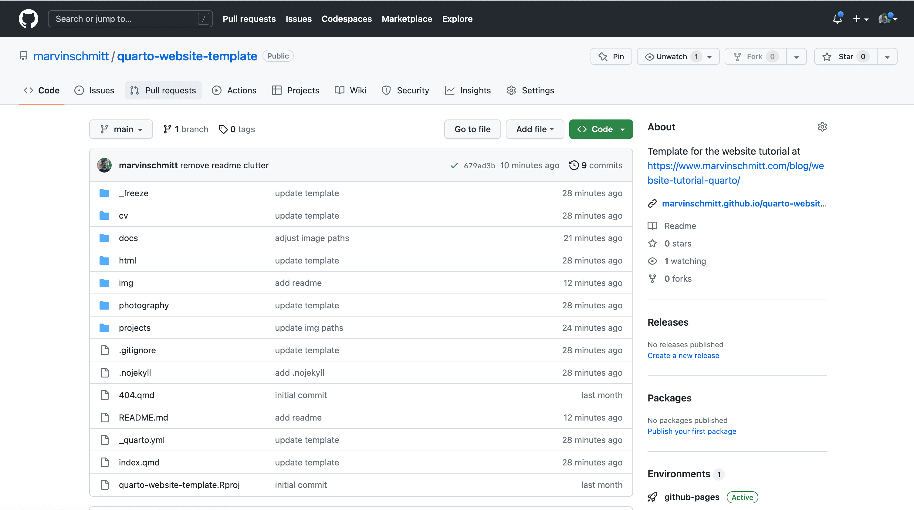
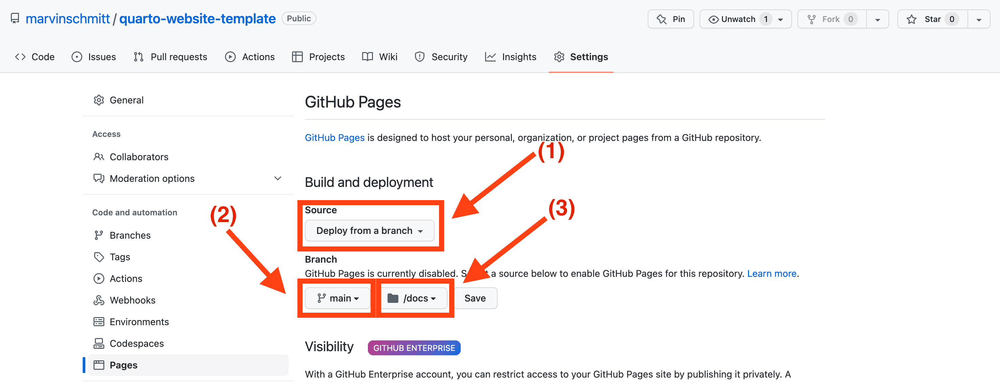

![]()

Quick Links: Download the free Template Live preview of the template
1 Introduction
As an academic researcher, scientist, or basically anyone working with a computer, it’s essential to have an online presence. With the rise of the internet, having a personal website has become more critical than ever. A personal website serves as a platform to showcase your research work, achievements, and credentials to a global audience. It’s a professional tool that helps you stand out in a crowded digital world and reach a wider audience. In this blog post, we will be exploring the steps involved in creating a personal website that accurately reflects your identity. From choosing the right tools all the way to publishing your website on the internet, this post will cover everything you need to know to create a successful and effective personal website. Whether you’re a seasoned researcher or just starting out, this guide is designed to help you achieve your online goals and reach a new level of discoverability.
The internet is full of tools to build a website, and their sheer amount can be overwhelming. WordPress is a great no-code tool, but its visual editor has driven me nuts when I used it in the past to do client work as a freelance web designer. I personally prefer code-based tools because they give me full control and reproducibility. But even within the realm of code-based web design, there are more tools than a single person could ever try out. In this blog post, we will talk about how to set up your personal website with Quarto.
2 Setting up your website with Quarto
Quarto is a new open-source publishing system built on Pandoc. Quarto lets you write dynamic content using Python, R, Julia, and Observable, and author documents as plain text markdown or Jupyter notebooks. You can also publish your work in various formats, such as HTML, PDF, MS Word, ePub, and more. Quarto is the next generation of RMarkdown, and it aims to make scientific and technical publishing easier and more accessible for everyone.
For our purpose of creating a personal website, Quarto is well-suited because you might already use R (possibly even via RStudio) for your analyes. But even if you are new to the R ecosystem, worry not – you do not need any R to build your website with Quarto.
2.1 My template for you
You do not have to start the project of creating your own personal website from scratch because I have crafted a template for you. You can take the template, fill in your information, and leave it as-is. Alternatively, if you find that crafting your own website sparks joy for you, and you want to further delve into the nuts and bolts, you can simply take this template as a basis and extend your website from there.
You can take a look at the live preview here. You find the free direct download link for the entire template here.
The first step is to download the website template. You can either clone the GitHub repository or download a .zip archive with the template here:
2.2 Opening the template in RStudio
Unpack the archive and open the quarto-website-template.Rproj file in RStudio. If R and RStudio are not installed on your machine, check out this link. You should see a new Build tab in the upper-right panel of RStudio with a button Render Website:

Build tab containing a Render Website buttonIf you do not see that tab and button, please use the most powerful debugging tool known to mankind: Restart RStudio.
2.3 Global configuration
Open the file _quarto.yml in the root directory. This is where you control the settings of your website. The YAML format is a compromise between a machine-readable and a human-readable file. The good news is: You don’t have to write new YAML blocks; you just have to enter some info in the appropriate places. Let’s go through the _quarto.yml file step by step.
2.3.3 Advanced settings
The rest of the _quarto.yml file just controls that we will indeed create a website, our preview tab doesn’t change all the time, and we can publish our website without complications. Don’t mess with this part unless you know what you are doing. If you do know what you are doing: Move fast and break things 😉
2.3.4 More config tweaks
This blog post covers the fundamentals to set you up with a working website. Are you hungry for more and want to pull an all-nighter because creating a website can be super addictive? The official Quarto Documentation contains a bunch of other settings you can tweak via the _quarto.yml configuration. Happy hacking, and let me know if you find something you want me to cover in a future blog post!
2.4 The landing page
In the root directory of the template folder, you find the file index.qmd. This is the landing page of your website. This is the first impression that visitors have from your website. It is a great opportunity to tell them a bit about yourself and spark their interest.
In this template, we are not designing a full landing page from scratch. Instead, we use one of the great template designs that are shipped with Quarto. Template inception. We will basically feed Quarto the info to create a pretty “About” section, where users see your image, some social links, and a brief description.
Open the /index.qmd file and inspect the header, that is, the part at the top of the source code which is enclosed in --- delimiters:
/index.qmd
---
about:
template: jolla
id: about-block
image: img/my_image.png
links:
- icon: twitter
text: Twitter
href: https://twitter.com/MarvinSchmittML
- icon: github
text: Github
href: https://github.com/marvinschmitt
- icon: linkedin
text: LinkedIn
href: https://www.linkedin.com/in/marvin-schmitt-a85b321a2/
- icon: envelope
text: Email
href: "mailto:mail.marvinschmitt@gmail.com"
---All following fields are nested in the about field, which is our way of telling Quarto that all the subsequent information should be associated with our “About” section. The template is called jolla, and you can find other options here. The id field assigns a name to the “About” section such that you can insert it anywhere in your page. As the name might suggest, the image field contains the path of an image to display on your landing page. Finally, the links field contains a bunch of social links. Each social entry consists of three fields:
icon: identifier of an icon, such astwitterorenvelope. You can take a look at the Standard Bootstrap5 Icons for more icon names.text: description of the entry, usually for accessibilityhref: link, make sure to addmailto:before an email address
As you can see in the /index.qmd file, the “About” block is inserted in the actual document via
/index.qmd
::: {#about-block}
:::and you can add a nice introduction about yourself below the block.
2.5 Customizing the colors
I have prepared a style file at html/styles.scss, which contains the core configuration from the fabulous website of Andrew Heiss. This section defines the colors of the website which are used throughout many pages.
html/styles.scss
$primary: $teal!default;
$secondary: $gray-700 !default;
$success: $green !default;
$info: $cyan !default;
$warning: $orange !default;
$danger: $red !default;
$light: $gray-400 !default;
$dark: $black !default;The most important field is arguably $primary. If you want your website to look mainly green, just change that line to $primary: $green!default;. Note that $teal and $green are SCSS variables, which are defined further up in the file. If you want to fine-tune your color palette, you can change these HEX codes.
2.6 Adding new pages
If you want to add a new page with the name mypage to your website, create a folder mypage/ and add a file index.qmd in that folder. This has one subtle advantage over creating mypage.qmd in the base directory. If you created /mypage.qmd, the URL would be www.yourname.com/mypage.html. That exposed .html in the URL looks very 2010. Instead, you should go with /mypage/index.qmd and get the modern-looking URL www.yourname.com/mypage.

.html in your URL by using a subfolder with index.html.Once you have created your brand-new index.qmd, just copy the code skeleton of any other index.qmd from the template and start adding your content. If you wish to, add the newly created page to the navigation (see Section 2.3.2). That’s it, you have successfully extended your website 🚀
3 Publishing your website to the internet
Now that we have built the core of your website, we actually want to publish your page on the internet. This process is called deployment. The standard way of deploying a website is through a domain (like www.marvinschmitt.com) which maps to a webspace. But domains and webspaces cost money and I want to reduce the barriers of creating a website for you. Luckily, GitHub offers a free service to deploy websites of their users. This free service is called GitHub pages, and your website will live at <username>.github.io if you deploy with GitHub pages.
3.1 Setting up your GitHub account
First, you create a free GitHub account at www.github.com. This is the go-to place for many programmers from various fields for all things around developing software. GitHub is an invaluable resource if you want to collaborate with others or simply build a portfolio of your own work to strengthen your next job application. Even the comments section of this blog is powered by GitHub (as of March 2023).
Even if you come to the conclusion that you don’t actually want to build a personal website: If you are writing code in any way, please create a GitHub account now if you don’t have one already 😉
Note: If you deploy your website through GitHub pages, your website will live at <username>.github.io – so you might want to avoid usernames like N00bSlayer420. n00bslayer420.github.io might not look as cool on your resume, just saying.
3.2 Preparing your website for GitHub pages
The template already contains all necessary settings for GitHub pages, so you don’t have to do anything in this section. However, it’s always good to have a superficial understanding of how things work, and it’s fairly staightforward in this case. We use the simplest form of GitHub pages: We build the entire website locally (i.e., in RStudio) and output the built page into the docs/ folder. This is configured in the output-dir field of the almighty _quarto.yml:
_quarto.yml
project:
type: website
output-dir: docsWe commit this docs/ folder to GitHub, and GitHub pages simply uses that folder to serve our website. This has one important consequence: If we make any change to our website, we have to Render the website again in RStudio. That’s how the updates make it to the docs/ folder! Only changing the .qmd file is not enough because GitHub does not render our site directly from the .qmd source.
If you are not familiar with programming at all, just imagine it like this: You are a real estate agent with a downtown office. You have your current listings in your street-facing window. You always write your listings in Microsoft Word, and those documents are of course saved as .docx files on your computer. However, those documents somehow have to get from your computer to the window display.
That’s the job of your friendly assistant Paige. You and Paige have agreed on the following workflow. You have a folder docs/ where you save all current listings as PDF files. Paige will monitor this docs/ folder, and whenever there is a change, Paige will print the PDF and replace the listing in the window display. Sounds like a straightforward process, right? That’s pretty much what we are doing in our deployment pipeline as well:
| Real Estate Agent | You | |
|---|---|---|
| Environment | Microsoft Word | RStudio |
| Source files | .docx |
.qmd |
| Output folder | docs/ |
docs/ |
| Deployment | Assistant (Paige) | GitHub Pages |
| Output format | .pdf |
.html |
| Serving platform | Window display | <domain>.github.io |
Note to advanced readers: You can set up a GitHub action to let GitHub build the website directly from the source files. But that deserves its own tutorial since some bugs persist which make things awkward (as of February 2023). If you would like to see automatic deployment covered in a future blog post, please let me know!
The second change to our website files is to include an empty file with the name .nojekyll (already included in the template). Usually, GitHub pages does some post-processing on your website files with Jekyll. Since Quarto handles all the processing we need, we want to deactivate Jekyll’s post-processing. Adding a .nojekyll file to your website root directory does exactly that: It bypasses post-processing via Jekyll.
3.3 Deployment 🥳
We are almost there!
You will now create a new repository with the name <github_account_name>.github.io, where <github_account_name> is the exact name of your GitHub account. It is important that you follow this pattern, because <github_account_name>.github.io is the only repository that will be hosted directly to the URL <github_account_name>.github.io.
In my case, my GitHub name is marvinschmitt, so my website repository would be called marvinschmitt.github.io and the URL of my website will be marvinschmitt.github.io.
Navigate to the newly created repository, select Add files via Upload, and add the entire folder content of our RStudio website project. Your repository should be populated now and look somewhat similar to this:

On the GitHub repository, go to Settings and click on GitHub Pages. Make sure that GitHub pages will deploy from a branch (1), the branch is set to main or master (2), and GitHub Pages is served from the docs/ folder (3):

main or master (2), and it serves from the docs/ folderGo back to the repository and you’ll see a brown dot indicating that a build is in progress. This can take a couple of minutes. Once the deploy is done, the indicator dot will turn green. That’s it. Congratulations, your website is now live at <yourname>.github.io! 🎈🥂🥳
3.4 (Optional) Managing GitHub directly through git
Manually uploading your files to GitHub after every update can feel tedious.
3.4.1 Option 1: Connect GitHub and RStudio
This great tutorial shows how you can directly connect GitHub and RStudio with a few simple steps. This makes uploading updates to your website as easy as pushing “Commit” and “Push” in RStudio.
3.4.2 Option 2: GitHub Desktop
If you don’t want to manage the GitHub repository directly in Rstudio but don’t want to use the command line either, you can use GitHub Desktop as an in-between solution. I can highly recommend GitHub Desktop, it’s really easy to set up and use, even if you don’t have any experience with git.
4 Creating Content
Creating high-quality content is obviously one of the most important aspects of building a personal website. Your content serves as a reflection of your work and achievements. When creating content, it’s crucial to keep it clear and concise, while also making sure it accurately reflects your brand.
There are several types of content that you can include on your personal website. Articles, blogs, research papers, and presentations are some of the most common options. When choosing the type of content to include, it’s important to consider the purpose of your website. If you’re using your website to showcase your research work, it’s recommended to include research papers and presentations. If you’re using your website to share your thoughts and insights, it’s recommended to include articles and blogs. Some people (myself included) also upload a public CV to their website, but that’s an individual decision.
When creating content, it’s also essential to consider your target audience. Write in a language that is easy to understand and appealing to your target audience. It’s important to remember that your website is not just a place to showcase the technical products your work, but also an opportunity to connect with your audience and build relationships.
To create high-quality content, it’s recommended to:
- Write in a clear and concise language;
- Use visuals such as graphs, charts, and images to make your content more engaging;
- Proofread your content to ensure it’s error-free; and
- Regularly update your content to keep your website fresh and relevant – that is especially important if you feature articles or blog posts.
By following these tips, you can create content that accurately reflects your brand and appeals to your target audience. Your content is an essential aspect of building a successful personal website, so make sure to give it the attention and care it deserves.
5 Some quick tips
This is a random collection of quick tips that people asked me to cover in this blog post.
5.1 General web development tips
Here are some general web development tips, ranging from file management and DNS over to HTML, CSS, and JavaScript.
5.1.1 Relative links
Thanks to Paul Buerkner for requesting this
Suppose you are editing the file projects/index.qmd and want to add a link to the page <name>.github.io/photography. You can of course link to the full URL <name>.github.io/photography, but that link will break if you change your domain name to www.<name>.com. Instead, you can use relative links. You only need to know that ../ takes you one layer back on the folder tree.
Example: Starting from projects/index.qmd, you can use ../photography/index.qmd to walk back one layer into the root folder of your website, and then move into the folder photography/, where index.qmd of photography lives. This relative path is valid no matter what domain you use. It only breaks if you decide to remodel the entire structure of your website. But in this case, I assume you know what you are doing and you’re well off on your own 😉
5.1.2 CSS flavors
Thanks to Andrew Heiss for making me aware of SCSS from studying the source code of his website
Quarto supports some cool CSS variants, such as SCSS. In SCSS, you can add variables such as $orange to define your favorite color once and use it in many different places. This deserves a separate blog post, though.
5.1.3 Include Order
If you mix HTML with CSS and JavaScript, make sure to include the files in the correct order. If your JavaScript manipulates existing HTML objects through the DOM, make sure to include the JavaScript file after the HTML body. If you include the JavaScript before the HTML body, JavaScript will not know that the HTML objects exist, and you will have a bad time. Been there, spent well over 2 hours debugging. 0/10, cannot recommend.
5.2 Quarto specific tips
Here are some tips that are specific to Quarto, Markdown, or RMarkdown.
5.2.1 Adding a table of contents
Thanks to Paul Buerkner for requesting this
Thanks to Quarto, it’s super easy to add a table of contents. Just add the following lines to the header of your .qmd file, without any indentation:
index.qmd
toc: true
toc-title: Contents
toc-location: left5.2.2 Labels and references
If you are familiar with \(\LaTeX\), you might appreciate proper references with \label{sec:introduction} and \autoref{sec:introduction}. The Quarto equivalent is {#sec-introduction} for the label and @sec-introduction for the reference.
5.3 More tips?
If you know any other quick tips that you would like to see here, just leave a comment below or drop me a message. I will be happy to include it (and credit you, of course) 🚀